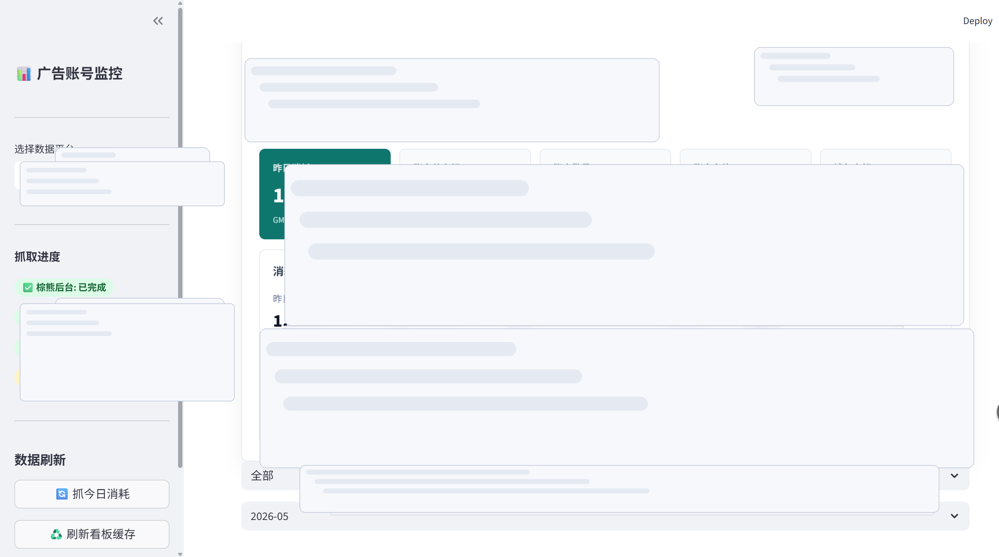
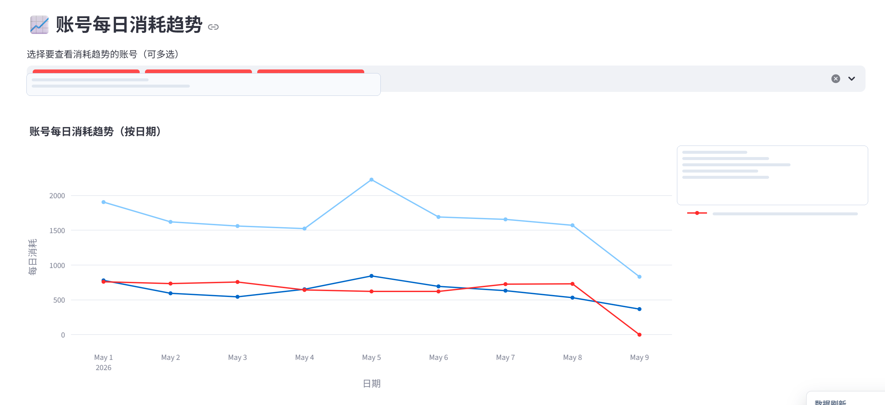
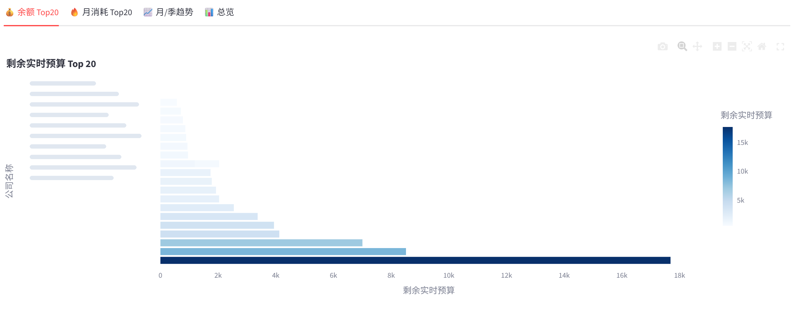
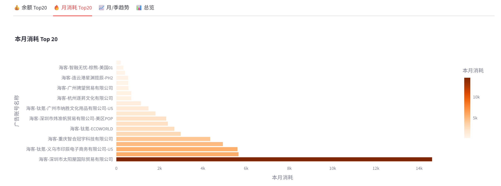
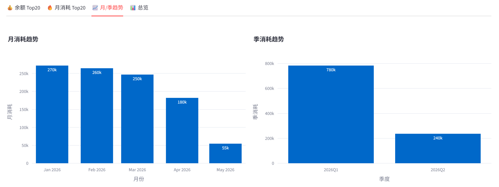
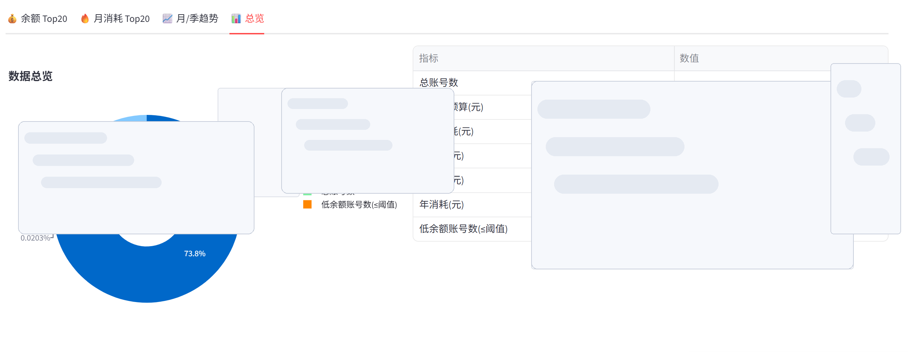
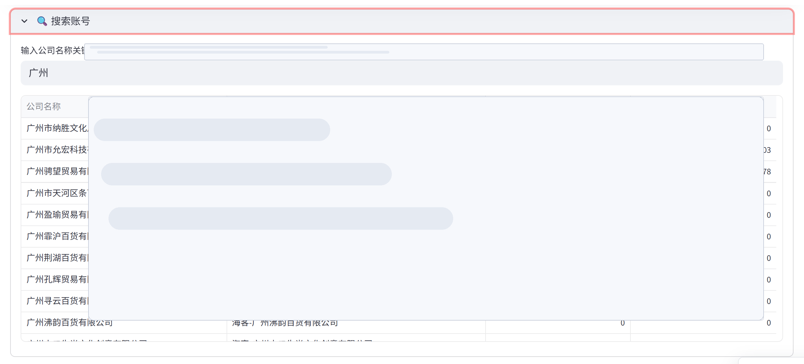
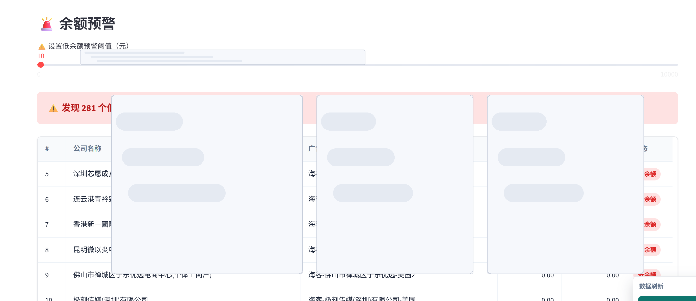

01项目简介
针对巴西市场商业信息分散、查询成本高的问题，构建了一套基于 BrasilAPI 公共接口 + Playwright 浏览器的企业资质数据采集系统。支持批量输入 CNPJ 税号，自动采集企业的工商状态、税务信息、股权结构等核心数据，并通过 Python 数据处理管道完成清洗、聚合和 Excel/CSV 结构化导出。
02数据来源
BrasilAPI 公共接口
巴西政府开放数据 API，提供 CNPJ 注册信息、CNAE 行业代码、公司状态、股东结构等基础字段
Playwright 浏览器增强
针对 API 未覆盖的页面详情（如历史变更、税务分类），使用无头浏览器补充抓取
03系统架构
┌─────────────────────────────────────────────┐
│ 用户输入 CNPJ 列表 │
└──────────────────┬──────────────────────────┘
▼
┌─────────────────────────────────────────────┐
│ CNPJ 验证层 — 校验格式 + 去重 + 分批 │
└──────────────────┬──────────────────────────┘
▼
┌──────────────┐ ┌──────────────────────────┐
│ BrasilAPI │ │ Playwright 浏览器补充 │
│ HTTP 快速查询│ │ (details / tax / hist) │
└──────┬───────┘ └──────────┬───────────────┘
└──────────┬───────────┘
▼
┌─────────────────────────────────────────────┐
│ 数据聚合 & 清洗 (Pandas) │
│ · 字段映射 · 缺失值处理 · 类型转换 │
└──────────────────┬──────────────────────────┘
▼
┌─────────────────────────────────────────────┐
│ 结构化导出 (Excel / CSV) + 可视化图表 │
└─────────────────────────────────────────────┘
04核心功能
批量 CNPJ 查询
支持文本文件导入 CNPJ 列表，自动分批请求，遵守 API 频率限制
工商状态识别
解析公司状态码（ATIVA / BAIXADA / SUSPENSA / INAPTA），标注高风险企业
行业分类映射
CNAE 主/次代码 → 行业中文名称映射，支持多行业标签
错误重试机制
API 超时 & 速率限制自动重试（最多 3 次），异常 CNPJ 跳过并记录日志
Excel 结构化导出
自动生成带格式的 .xlsx 报表，包含筛选器、颜色标注和冻结表头
可视化仪表板
自动生成行业分布、地区分布、注册资本区间等多维度图表
05数据分析成果
对 300+ 家巴西企业完成数据采集与清洗后，生成了以下分析报表：








06技术选型
| 模块 | 技术 |
|---|
| API 集成 | BrasilAPI (REST) · requests 库 |
| 浏览器自动化 | Playwright · 无头 Chromium |
| 数据处理 | Pandas · NumPy |
| 可视化 | Matplotlib · Seaborn |
| 导出 | openpyxl (Excel) · CSV |
| 日志 & 监控 | Python logging · 结构化日志 |
07关键技术难点
API 频率限制应对
BrasilAPI 公共接口有请求频率上限。实现自适应延时 + 分批队列，大批量查询时自动降速。
CNPJ 格式多样性
用户输入格式不统一（带/不带分隔符、长短不一）。前端正则校验 + 后端标准化清洗。
Playwright 反检测
目标网站对自动化浏览器有基本检测。通过 stealth 参数伪装 User-Agent 和 WebDriver 特征。
编码与特殊字符
葡萄牙语人名/地名包含特殊字符，Excel 导出时需指定 UTF-8 BOM 确保中文 Excel 正确显示。